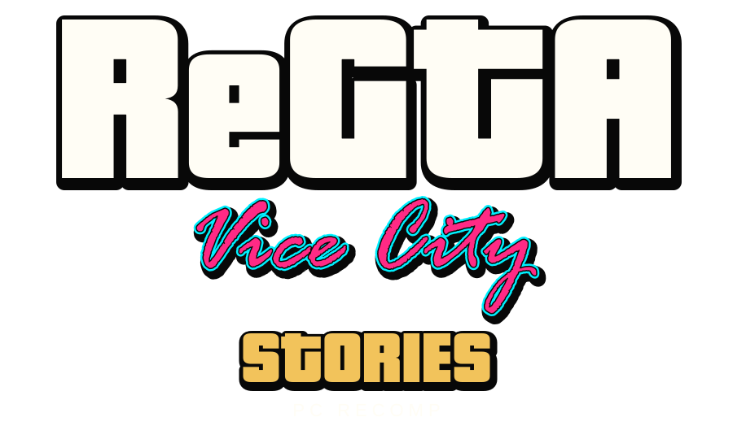

Independent fan project · Native PC · 100% Pure Rust

Vice City Stories. A native PC future.
Rebuilding the PS2 experience in 100% pure Rust: its neon streets, sun-soaked beaches, dynamic handling and 1984 synthwave atmosphere. A long-term clean-room recompilation project, developed in the open.
by Benji Paname
v0.3.0
Alpha milestone
171
Unit tests passed (100%)
0
Compiler warnings
729 / 26,735
Routines ported (4.8%)
Local validation: 26 October 2026. Tests validate covered code paths; 100% measured from our native Rust codebase.
The city is taking shape.
A playable native PC prototype is the foundation. Every system is wired into real-time 3D OpenGL rendering.
Victor Vance & locomotion
Handling & suspensions
3D weapons & pyrotechnics
Weather & 24h synthwave sky
8 radio stations & SCM missions
Native Rust port progress & code coverage
Squarified treemap tracking implemented subsystems and routines in native Rust (100% local codebase).

Share of the original game's code, by size, implemented in native Rust (src/**/*.rs). Green is the ported part of each class. 100% measured from our Rust codebase.
| Subsystem | Coverage | Code | Routines |
|---|---|---|---|
MissionsImplemented in Rust:CMissionScriptSystem 18/20Pending: cIntro 0/445, cOutro 0/364, cMidtro 0/204, cMOB_B03 0/94, cKEN_A02 0/118, cZHO_C01 0/75, cCutscene_Outro 0/108, cJAO_B03 0/67 |
0.47% | 18 / 7710 | |
OtherImplemented in Rust: pendingPending: (free functions) 0/407, cBombTruck 0/41, cChineseDelivery 0/38, Ped 0/136, cParamedic 0/35, cFrontEnd 0/14, cEncounter 0/41, cListBox 0/51 |
0.00% | 0 / 7504 | |
MinigamesImplemented in Rust:cRadioApp 17/47Pending: cMapApp 0/69, cAmmozoneApp 0/75, cEmailApp 0/66, cBaseTradeApp 0/74, cPauseStatsApp 0/71, cShootingRange 0/66, cHotWiringApp 0/43, cMolotovApp 0/41 |
0.67% | 17 / 2639 | |
World and engineImplemented in Rust:CStaticCollisionWorld 68/68, COpenGLRenderer 78/78, CPropsObjectsManager 37/37, CTextureRasterizer 28/28, CRenderWarePS2 17/18, CSceneManager 17/17, CVifPacketDecoder 14/14, CModernPipeline 16/16Pending: CCollision 0/64, cPhysicalIntegrator 0/21, cDynamicProp 0/57, WorldImpl 0/224, cEntity 0/126, cLocalAreaKnowledge 0/24, cZoneManager 0/4, cGlInterface 23/102 |
26.03% | 337 / 2197 | |
VehiclesImplemented in Rust:CHandlingManager 18/18, CVehicleModel 17/17, CTrafficManager 15/15, CVehicleAccess 13/13, CTireFrictionModel 10/10, CTransmissionDynamics 10/10, CTrafficLightsSystem 9/10, CSuspension4Wheel 8/14Pending: cVehicle 0/214, cWheeledVehicle 0/80, cNewGetInVehicle 0/42, cTankField 0/41, cBoat 0/51, cCarYard 0/24, cCarMonitor 0/24, cAttackHelicopter 0/31 |
13.38% | 136 / 1738 | |
HUD and PDAImplemented in Rust:CHudTextFontRadar 22/22, Gui 1/46Pending: cIPhonePad 0/53, cPda 0/55, cGPS 0/32, cRadar 0/39, cContextHelp 0/43, (free functions) 0/75, cTurfMap 0/24, cPdaHelpManager 0/30 |
2.79% | 23 / 1574 | |
PeopleImplemented in Rust:CPlayerPed 38/38, CAnimBlendHierarchy 38/38, CLocomotionController 23/23, CPedestrianPopulation 13/13, CPedestrianPanicReaction 10/10, CPedestrianObstacleAvoidance 2/10Pending: cPed 0/216, cPlayer 0/125, cPopulationManager 0/37, cTaskBar 0/48, cAnimation 0/24, cSimplePedBase 0/39, cPlayerOnFoot 0/20, iAITask 0/44 |
19.06% | 124 / 1257 | |
WeaponsImplemented in Rust:C3DBallistics 20/20, CWeaponManager 17/17, CProjectileRocket 10/10, CFireFlamethrower 9/10, CWeaponCrosshairHUD 8/8, CProjectileGrenade 2/10, cHudWeaponSelect 1/31Pending: cHudWeaponSelect 1/31, cWeaponManager 0/38, cMolotovManager 0/12, cAIRocket 0/22, cRocketMan 0/27, cPlayerSensorCone 0/15, cBulletBasedWeapon 0/17, cBaseExplosion 0/11 |
17.86% | 67 / 746 | |
EffectsImplemented in Rust:CSunsetColorGrading 8/8, cParticleEmitterWaterSplash 9/9, cWaterRenderBlock 5/5Pending: cWaterGuard 0/29, cFireFighter 0/22, cKillWaterTarget 0/20, immsprite3d 0/23, cFireEngine 0/21, cGeneralParticleController 0/13, cParticleEmitterBase 0/21, cFire 0/14 |
5.32% | 22 / 562 | |
AudioImplemented in Rust: pendingPending: cAudioManager 0/141, cAudioBaseOAL 0/44, cSoundEvents 0/26, CAudioEngine 0/16, cSoundStreamOAL 0/26, cAudioBase 0/20, cSoundStream 0/20, SoundImpl 0/44 |
0.00% | 0 / 347 | |
Saves and wanted levelImplemented in Rust:CWorldManager 8/42Pending: CWorldManager 8/42, SaveGameImpl 0/157, cSaveGameMgr 0/31, cWantedManager 0/33, cStatsManager 0/101, cPoliceChase 0/16, cWantedRating 0/20, cScreenSaver 0/8 |
7.98% | 8 / 461 |
One verified step at a time.
Milestones guide the work. They are not release-date promises.
Read, render, explore
Vehicles, weather & audio
Full campaign & parity
Support independent development
Help bring Vice City Stories to PC.
Understand
Rebuild
Compare
Support is optional. It does not buy the game, early access or assets, and does not guarantee a release date or completion.